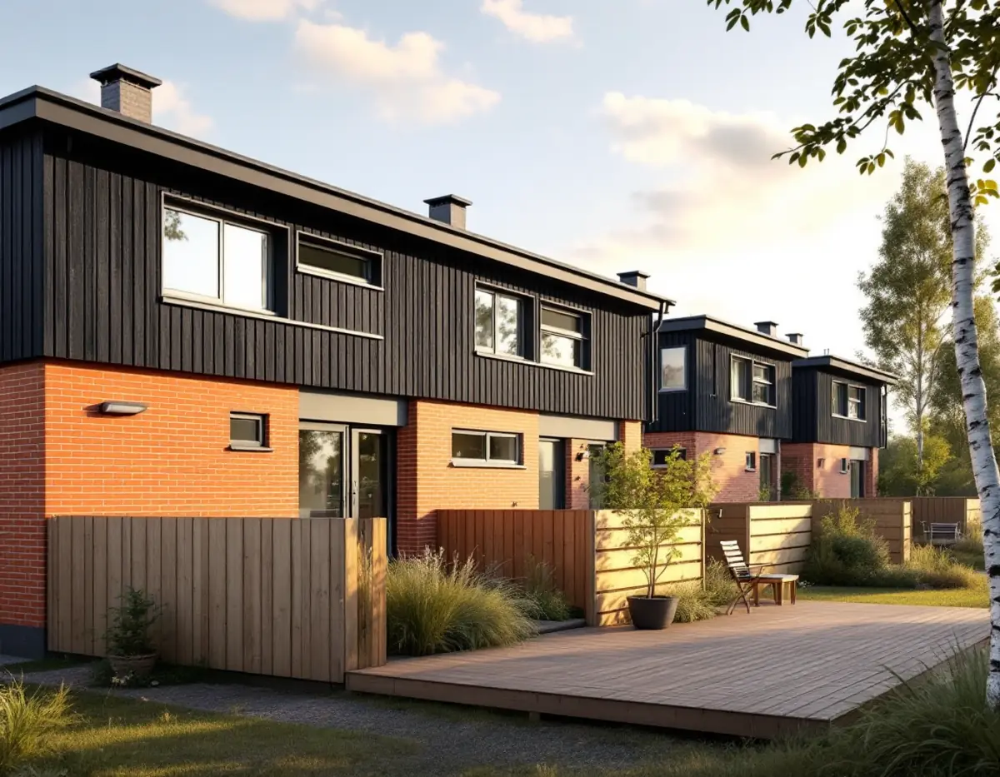
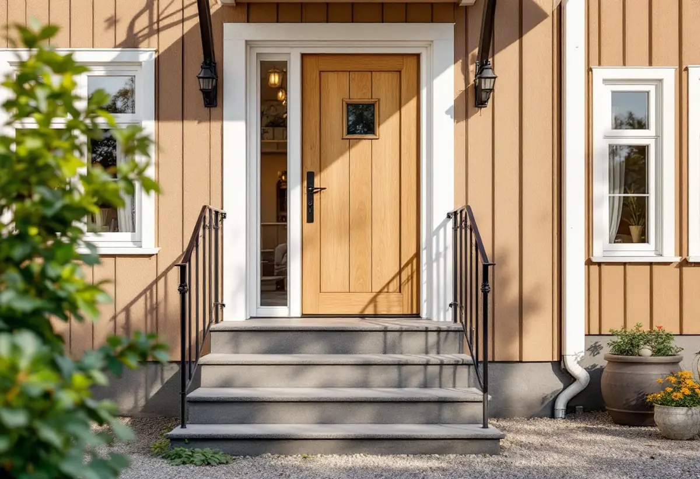

Platsbesök
Vi mäter uteplats, marknivåer och avstånd till gränser och tittar på grannarnas plank och förråd.
I flera delar av Upplands Väsby byggdes radhus, kedjehus och atriumhus i grupper på 1960- och 70-talen, ofta med små trädgårdar avgränsade av plank. När uteplatsen ska byggas om eller ett förråd byggas till gäller både kommunens mått och hänsynen till husgruppen. Geal Entreprenad AB bygger altaner, plank, förråd, carportar och entréer i hela kommunen, med gratis platsbesök och skriftligt kostnadsförslag.

Kommunens Kunskapsunderlag för kulturmiljö i Upplands Väsby beskriver radhus- och kedjehusområdena från 1960- och 70-talen som enhetligt uppförda bebyggelsegrupper med låg höjdskala och platta eller flacka tak. Bostäderna har förgårdsmark och små trädgårdar eller atriumgårdar med uteplatser, ofta avgränsade av plank. Exempel finns i Sjukyrkoberget, Skälby, Fresta och Odenslunda och i centrala Apoteksskogen.
Underlaget räknar små trädgårdar med uteplatser eller plankomgärdade gårdsrum med tydlig gräns mot allmänna ytor till områdenas karaktärsdrag, liksom enhetlig färgsättning och utformning av detaljer som balkongfronter och entrépartier inom varje bebyggelsegrupp. Vägledningen är att undvika tillbyggnader som bryter ursprungsvolymen och att inte hårdgöra ytor eller privatisera förgårdsmarken.
För ett nytt plank eller en ny altan är det därför klokt att utgå från grannarnas. Samma höjd, samma bräddimension och samma kulör gör att längan fortsätter att se ut som en helhet, så vi tittar på resten av raden innan vi föreslår något.

Upplands Väsby kommun skriver att en altan eller ett trädäck inom detaljplanerat område är lovfritt om det är lägre än 1,8 meter och ligger inom 3,6 meter från en byggnad, eller är högst 1,2 meter högt, och inte byggs på en byggnad eller i ett område som är kulturhistoriskt värdefullt. Ett räcke räknas bara in i höjden om det är tätt som ett plank.
Detaljplanen kan ha prickmark där marken inte får bebyggas, men altaner får strida mot detaljplanen upp till 50 kvadratmeter. Utanför detaljplan krävs normalt inget lov för en altan, men kommunen påpekar att en altan som är högre än cirka 1,7 meter till altangolvet kan betraktas som en byggnad.
För murar och plank gäller 1,8 meter inom 3,6 meter från byggnaden och 1,2 meter längre bort, och närmare tomtgränsen än 4,5 meter krävs grannens skriftliga medgivande. Kommunen beskriver ett staket som en inhägnad med en högsta höjd på 1,2 meter. En högre inhägnad räknas bara som staket om den går att se igenom från alla håll. Höjden räknas från befintlig marknivå där marken är som lägst.
Kommunen räknar garage, carport och förråd som komplementbyggnader, och efter ändringarna i plan- och bygglagen används inte längre begreppen friggebod och attefallshus. Inom detaljplan får alla lovfria komplementbyggnader på tomten tillsammans vara högst 45 kvadratmeter, och den största högst 30. Utanför detaljplan är gränserna 65 och 50 kvadratmeter.
Kommunen ger ett räkneexempel: har du tidigare byggt en friggebod på 15 kvadratmeter och ett attefallshus på 20 har du bara 10 kvadratmeter kvar att bygga lovfritt. Ett garage på 35 kvadratmeter kräver bygglov inom detaljplan även om potten inte är utnyttjad. Taknocken får vara högst 4,0 meter inom detaljplan, och byggnaden ska stå 4,5 meter från tomtgränsen om grannen inte har gett sitt skriftliga medgivande.
Ska förrådet få vatten eller avlopp behöver du betala en VA-avgift, även om du kopplar på från den befintliga anslutningen på tomten. Mer om förråd och snickeri finns på sidan om snickare.
Oxundavägen bedöms i kunskapsunderlaget utgöra ett särskilt värdefullt bebyggelseområde enligt plan- och bygglagen. Längs Vinkelvägen har radhusen ytterdörrar av ek med spröjsat fönsterglas, omfattade av en vit putsad portik, och grusgångar leder fram till en entrétrappa med tre steg och ett enkelt smidesräcke. Längs Radhusvägen sitter ekdörrarna infällda i fasaden.
Vägledningen för området är att respektera kvarterens entrélösningar med dörrar, fasadförskjutningar och trappor och att undvika nya fönster- och dörrupptagningar. Kommunen skriver att det krävs bygglov för mur, plank och komplementbyggnader inom ett kulturhistoriskt särskilt värdefullt område, även när de annars hade varit lovfria.
En sliten ekdörr kan ofta slipas, oljas och få nya tätningslister i stället för att bytas. Mer om husen i området finns under målare i Upplands Väsby och takrenovering i Upplands Väsby.
Vi mäter uteplats, marknivåer och avstånd till gränser och tittar på grannarnas plank och förråd.
Detaljplanen, prickmarken och kunskapsunderlaget för kulturmiljö kontrolleras.
Tidigare friggebodar, attefallshus och förråd på tomten läggs ihop.
Trall, plank, förråd och dörrarbete redovisas som egna poster.
Vi bygger efter ritningen och följer grannarnas plank i höjd och linje där det passar.
Vi går igenom resultatet tillsammans.
Skatteverket ger rotavdrag för att bygga en altan till ett småhus om den byggs ihop med huset och för att byta och reparera dörrar och dörrlås. Att bygga ett fristående förråd eller garage ger inget avdrag, och inte heller att bygga staket och murar.
Är radhuset en bostadsrätt ger varken altan eller byte av ytterdörr avdrag. Där gäller avdraget bara arbete inne i bostaden, som innerdörrar och insidan av ytterdörren. Avdraget är 30 procent av arbetskostnaden, högst 50 000 kr per person och år och högst 75 000 kr tillsammans med rutavdrag. Material och resor ingår inte, och Geal drar avdraget direkt på fakturan.
Uteplatsens storlek, om den gamla trallen och planket kan rivas utan att grunden behöver göras om och hur många meter plank som ska bytas påverkar mest. För ett förråd väger grund och tak tyngst. Platsbesöket är gratis och du får ett skriftligt kostnadsförslag.
Altan, väggar, dörrar och inredning.
Snickare i Stockholm →Takbyte, takbesiktning och plåtarbeten.
Takläggare i Upplands Väsby →Bollstanäs, Vilunda och Runby.
Takrenovering i Upplands Väsby →Potten, VA-avgiften och Bollstanäs.
Attefallshus i Upplands Väsby →Radhus, suterräng och samfälld VA.
Badrumsrenovering i Upplands Väsby →Karta, VA och tomtgräns.
Byggföretag i Upplands Väsby →Sekelskiftesvillorna längs Gamla vägen.
Fasadmålning i Upplands Väsby →Radhus från 70-talet och hus från bomässan.
Fasadrenovering i Upplands Väsby →Inflygning, trafik och tystare fönster i Väsby.
Fönsterbyte i Upplands Väsby →Kedjehusens fönster, kulör och beslag.
Fönsterrenovering i Upplands Väsby →Kedjehus, suterräng och radon.
Golvläggare i Upplands Väsby →Slipa trägolvet i radhuset på platta.
Golvslipning i Upplands Väsby →Radhus, kedjehus och atriumhus.
Köksrenovering i Upplands Väsby →Radhus, kedjehus och villor i Väsby.
Målare i Upplands Väsby →Rännor, stuprör och radhusplåt i Väsby.
Plåtslagare i Upplands Väsby →Nytt tak, solceller och väderradarn.
Takbyte i Upplands Väsby →Radhusen och plasttapeten.
Tapetsering i Upplands Väsby →Radhus, kedjehus och utpekade områden.
Tillbyggnad i Upplands Väsby →Äldre villor, radhus och varsamhet.
Totalrenovering i Upplands Väsby →